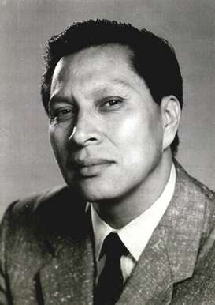

The dance tells the story of the beginning of nature, life and beyond. 
Dance of the Twelve Moons is a folk ballet. It is based on the calendar year of the moons of the American Indian. The production consists of twelve episodes and twelve distinctive American Indian dances performed by many tribes throughout the nation over the years past, and many of the dances are no longer performed.
The Dance of the Twelve Moons contains the twelve dances with narration, choreographed designs with illustrations and twelve symbolic designs for backdrops and a resume of Arthur Junaluska's life and photographs. The story of the dance is told by me, Betty Junaluska.
There is no music score but in performance the sound of the traditional Indian chanting with drums, flute, gourd, bells and rattles. The Indian Foot and the Earth are like two voices in duet dancing toe-to-heel caressing the Earth. Authentic colourful costumes are worn by the spirited dancers.
The ballet was successfully performed at Hunter College in New York City, then in North Carolina and also in the North West with an all Indian cast. It was considered a ballet of great beauty.
It is my desire now, as we are in the beginning of the new millennium that the Dance of the Twelve Moons may continue to live, reaching new audiences and that the ballet be rediscovered as a lasting tribute to Arthur's life-long work, performed for all races and for his people.
Let Arthur Junaluska circle around the world with his ballet, Dance of the Twelve Moons.
What follows is a sample of material from the book.
Picture: Arthur Junaluska,
Creator of the Dance of the Twelve Moons
Click the image to see the full picture.